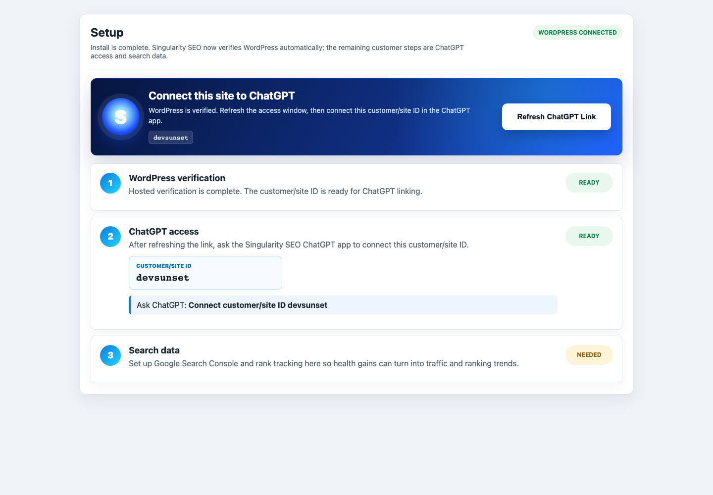
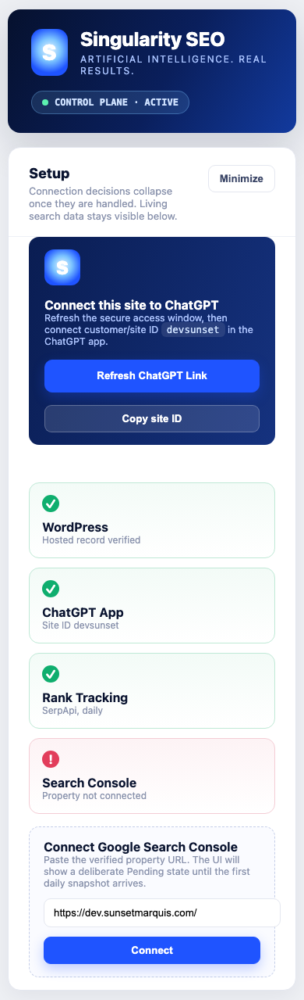

Audit the site
Inspect managed pages, rendered metadata, technical health, schema, social tags and setup state before changing public output.
SEO intelligence for WordPress and AI search
Singularity SEO brings two decades of hands-on site SEO experience into ChatGPT. It audits your WordPress site, studies your competitive field, builds page-by-page SEO for search engines and AI answer systems, then tracks what happens next.
The operating loop
Inspect managed pages, rendered metadata, technical health, schema, social tags and setup state before changing public output.
Review category competitors, map keyword lanes and build SEO around the opportunities your site can credibly compete for.
Shape titles, descriptions and page signals so search engines and AI systems can understand the business, offers and proof.
Connect Search Console and rank tracking, then use reporting feedback to refine future recommendations instead of guessing.
Real product surfaces
Use the dashboard for setup and visibility. Use the ChatGPT app to ask for baseline reports, competitive reviews, keyword strategy, governed batch proposals, rollback and progress reports from anywhere.


The system reports where things stand, what changed and what to do next. Pending data states are explicit. Public SEO changes are recorded. Restore points stay visible.
Read-only analysis is fast. Public SEO changes are proposed, reviewed, applied after approval and tracked in change history. Internal operating logic, credentials and proprietary SEO guidance are not exposed through public tools.